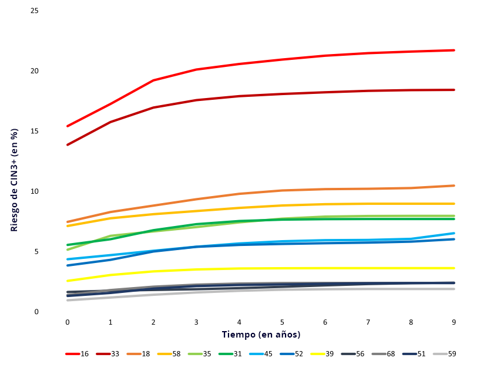

La prueba del VPH implica la identificación de infecciones por VPH en muestras vaginales o de cuello uterino. La mayoría de las pruebas de VPH que se utilizan en la detección primaria detectan el ADN viral o el ARN viral. Las agencias reguladoras aún no han aprobado las pruebas que detectan las proteínas virales en la detección primaria.
La mayoría de las pruebas de VPH utilizadas en entornos clínicos detectan de 13 a 15 tipos de alto riesgo (16, 18, 31, 33, 35, 39, 45, 51, 52, 56, 58, 59 y 68). La mayoría de las pruebas clínicas también incluyen el VPH66, un tipo de VPH con bajo potencial carcinogénico, y algunas también añaden el VPH 53.
Desde el 2020, existen más de 250 pruebas de VPH disponibles comercialmente. Se diferencian en cuanto a si se dirigen al ADN o al ARN, los tipos específicos de VPH detectados y si proporcionan información sobre la detección general o específica del tipo (genotipado), así como en el método de detección utilizado (hibridación frente a PCR). En la sección 3.3.3 de este módulo, se puede encontrar más información sobre las pruebas de VPH validadas para su uso en la detección.
1 Excelente sensibilidad y alta especificidad
| Resumen de la sensibilidad y especificidad de los métodos de detección del cáncer de cuello uterino primario* |
| Prueba de detección |
N.º de estudios |
Sensibilidad (IC 95%) |
Especificidad (IC 95%) |
| Detección de CIN2+ |
| Citología (ASCUS+) |
25 |
70,0% (62,5–77,6%) |
91,9% (90,3–93,6%) |
| HC2 |
31 |
90,4% (88,0–92,8%) |
88,5% (87,0–90,0%) |
| Citología (ASCUS+) y HC2 (prueba conjunta) |
13 |
94,2% (90,8–97,6%) |
87,7% (85,0–90,3%) |
| Detección de CIN2+ |
| Citología (ASCUS+) |
21 |
74.6% (65.6–83.6%) |
91,8% (90,0–93,7%) |
| HC2 |
22 |
95,3% (93,3–97,3%) |
89,0% (87,2–90,8%) |
| Citología (ASCUS+) y HC2 (prueba conjunta) |
12 |
96,7% (93,7–99,7%) |
82,9% (77,1–88,6%) |
*Datos de metanálisis actualizados basados en datos de estudios de Arbyn et al.21,22 Abreviaturas: ASC-US +, células escamosas atípicas de importancia mayor o indeterminada; CIN2+, neoplasia intraepitelial de cuello uterino de grado 2 o superior; CIN3+, neoplasia intraepitelial de cuello uterino de grado 3 o superior; HC2, Hybrid Capture® 2 High-Risk Human Papillomavirus DNA Test™; N.º, número. |
TABLA 2
Sensibilidad y especificidad agrupadas para CIN2+ y CIN3+ de citología (ASCUS + como punto de corte), pruebas de VPH y ambas combinadas [6]Bosch FX, Robles C, Díaz M, Arbyn M, Baussano I, Clavel C, et al. HPV-FASTER: broadening the scope for prevention of HPV-related cancer..
Una de las pruebas de ADN del VPH más ampliamente utilizadas y estudiadas en todo el mundo es Hybrid Capture 2 (HC2), una prueba de amplificación de señales que identifica 13 tipos de VPH oncogénicos. La HC2 tiene una sensibilidad del 90% y del 95% para CIN2+ y CIN3+ respectivamente, aproximadamente un 20% más alta que la citología. Se constató que la especificidad de la HC2 para CIN2+ y CIN3+ era de alrededor del 89%. Aunque es un 3% más bajo que la citología en este caso, la diferencia no fue estadísticamente significativa para CIN3+.
DEFINICIÓN
La superposición de los intervalos de confianza de las estimaciones de especificidad para HC2 y de los de la citología para CIN3 indica que las diferencias en las estimaciones no fueron estadísticamente significativas.
Los valores agrupados de sensibilidad y especificidad para las pruebas específicas de VPH basadas en PCR que detectan más de 12 tipos de VPH han notificado valores de 95,1% y 91,9% para CIN2 +, y 93,6 y 86,5% para CIN3 + respectivamente [7]Koliopoulos G, Nyaga VN, Santesso N, Bryant A, Martin-Hirsch PP, Mustafa RA, et al. Cytology versus HPV testing for cervical cancer screening in the general population..
Según la tabla anterior, las pruebas conjuntas presentaron una mayor sensibilidad pero menor especificidad, aunque estas diferencias no fueron estadísticamente diferentes. Este hecho plantea dudas sobre el beneficio de la doble prueba desde el principio. Las mujeres son inicialmente evaluadas mediante dos pruebas en lugar de una, lo cual incrementa considerablemente los costes y la positividad (tasa de derivación). Es por ello que la Sociedad Estadounidense contra el Cáncer recomienda ahora la detección del VPH solo cada 5 años en lugar de realizar una prueba conjunta cada 3 años, como se recomendó en el 2012.
NOTA:
No confundir la prueba conjunta con el uso de una prueba primero y luego otra para el cribado de mujeres positivas.
DEFINICIÓN
Las pruebas conjuntas se refieren al uso concomitante de citología y pruebas de VPH para la detección primaria, de modo que las mujeres con un resultado positivo en cualquiera de estas pruebas son derivadas para realizar otra pruebas posteriormente.
La especificidad de la prueba del VPH depende de la edad, presentando unos valores más bajos al disminuir la edad. Las mujeres con 30 años o menos muestran una mayor prevalencia de infecciones y lesiones por VPH. Dado que es poco probable que la mayoría de estas infecciones progresen a cáncer (falsos positivos), la detección puede provocar angustia psicológica innecesaria y llevar al sobretratamiento.
En general, se recomienda la detección con citología en mujeres de 25 a 30 años. A partir de ese momento en adelante, la prueba del VPH es la prueba de detección recomendada.
La mayor positividad (8-14%) y la menor especificidad que presentan las pruebas de VPH en comparación con la citología dan como resultado una derivación excesiva y un tratamiento excesivo. Por lo tanto, se recomienda que las mujeres con resultado positivo en la detección del VPH realicen una segunda prueba de cribado para mejorar el valor predictivo positivo de la prueba del VPH. Para obtener información sobre cómo superar esta menor especificidad de las pruebas de VPH utilizando diferentes tipos de cribado, y sobre las opciones de manejo clínico para las posibles combinaciones, consultar el MÓDULO 5.
Idea clave:
Las pruebas de VPH y las pruebas conjuntas detectan más lesiones precancerosas que la citología por sí sola. Sin embargo, esta menor especificidad, particularmente en edades más tempranas, requiere pruebas de cribado posteriores.
2 Alto valor predictivo negativo (seguridad/tranquilidad) para las lesiones precancerosas actuales y futuras y para el cáncer invasivo
Las pruebas de VPH tienen un alto valor predictivo negativo en la enfermedad actual y posterior, es decir, muy pocas mujeres con la enfermedad son consideradas incorrectamente como sanas (falso negativo). Es poco probable que las mujeres con un resultado negativo del VPH desarrollen una enfermedad de cuello uterino en los cinco años posteriores a la prueba, dos años más que la protección ofrecida por la citología negativa.

FIGURA 4
Incidencia acumulada de CIN3+ hasta los 72 meses después de un resultado inicial negativo para citología (en azul), prueba de VPH (rojo) o ambas (verde) [8]Dillner J, Rebolj M, Birembaut P, Petry K-U, Szarewski A, Munk C, et al. Long term predictive values of cytology and human papillomavirus testing in cervical cancer screening: joint European cohort study.
En este estudio de referencia, Dillner et al. reunió varios programas de detección europeos para evaluar el uso de la prueba del VPH con HC2 en comparación con la citología. El estudio reveló que 50 de cada 10.000 mujeres con una citología normal al inicio del estudio desarrollaron CIN3+ durante los siguientes 3 años (flecha azul), mientras que solo alrededor de 10 mujeres de cada 10.000 con una prueba de HC2 negativa al inicio del estudio desarrollaron una lesión de CIN3+ (flecha gris).
La detección basada en el VPH proporciona un 60-70% más de protección contra el cáncer de cuello uterino que la citología [9]Ronco G, Dillner J, Elfström KM, Tunesi S, Snijders PJF, Arbyn M, et al. Efficacy of HPV-based screening for prevention of invasive cervical cancer: follow-up of four European randomised controlled trials., y un resultado negativo proporciona un período de seguridad más prolongado.
Se combinaron los resultados de cuatro ensayos clínicos aleatorizados europeos que evaluaron el rendimiento de la citología frente a las pruebas del VPH en entornos para la detección. El análisis mostró que en los primeros tres años después de una citología negativa (en color rosa) o una prueba de VPH negativa (azul), la detección de casos de cáncer de cuello uterino en cada brazo fue extremadamente baja y no diferencial. Sin embargo, tras este momento de evaluación, el número de casos en el grupo de citología comenzó a aumentar, mientras que en el grupo de VPH estos casos se mantuvieron significativamente más bajos durante el período de estudio de 8 años. Se detectaron muy pocos casos en el grupo de VPH en los primeros 5 años, lo cual proporciona una fuerte evidencia de ventana de seguridad de 5 años.

FIGURA 5
Detección acumulada de cáncer de cuello uterino [9]Ronco G, Dillner J, Elfström KM, Tunesi S, Snijders PJF, Arbyn M, et al. Efficacy of HPV-based screening for prevention of invasive cervical cancer: follow-up of four European randomised controlled trials.
El uso de la prueba del VPH en los programas de detección da como resultado una mayor detección de lesiones precancerosas tratables en la primera ronda de cribado y menos mujeres con resultado positivo en la segunda ronda de cribado en comparación con la citología. El tratamiento temprano de las lesiones positivas de VPH en mujeres mayores de 30 años no conduce a un tratamiento excesivo, sino al tratamiento temprano de las lesiones precancerosas.
Idea clave:
Una prueba de VPH negativa o un resultado negativo de la prueba conjunta se asocia a un menor riesgo inmediato y longitudinal de neoplasia de cuello uterino. El riesgo de cáncer existente cinco años después de un resultado negativo de VPH o VIH y citología es menor que el riesgo existente tres años después de una citología negativa.
3 Procesamiento del VPH: automatizado, alto rendimiento y reproducibilidad
Algunas pruebas de VPH son procesadas mediante plataformas automatizadas con muy pocas manipulaciones manuales, lo que proporciona un alto rendimiento. Estas pruebas son utilizadas en entornos organizados con grandes volúmenes de muestra. Muchas de las pruebas de VPH requieren al menos un paso manual, y algunas requieren dos o incluso tres.
Ejemplo
Un estudio reciente [10]Loonen AJM, Huijsmans CJJ, Geurts-Giele WRR, Leeijen C, van der Linden JC, van den Brule AJC. Performance analysis of high-throughput HPV testing on three automated workflows. comparó el rendimiento de tres plataformas de VPH. Dependiendo de la prueba de VPH, se pueden procesar de 60 a 94 muestras en series de 3 a 5 horas. Por tanto, en un turno diario de hasta un máximo de 10 horas, las plataformas Cobas, Aptima y HC2 pueden procesar unas 282, 300 y 264 muestras respectivamente. En comparación, las tasas de detección de la citología en base líquida (13 portaobjetos/hora) y convencional (7 portaobjetos/hora) [11]Davey E, Irwig L, Macaskill P, Chan SF, D’Assuncao J, Richards A, et al. Cervical cytology reading times: a comparison between ThinPrep Imager and conventional methods. dan como resultado un máximo de 130 portaobjetos interpretados en 10 horas.
Dada la subjetividad de la citología, mantener una alta precisión requiere una práctica constante y una evaluación del control de calidad. Esto se puede mitigar un poco mediante la incorporación de la lectura automatizada de portaobjetos. Las pruebas de VPH, tras una curva inicial de aprendizaje, dan como resultado una alta reproducibilidad no solo dentro del mismo laboratorio (intralaboratorio) sino también en otros (interlaboratorio).
A pesar del uso de plataformas automatizadas y de la alta reproducibilidad, los programas de detección del VPH seguirán requiriendo un programa para garantizar la calidad. Para obtener más información sobre el control de calidad, consultar el módulo 8.
Idea clave:
Las pruebas de VPH permiten un procesamiento de muestras más rápido y presentan unos resultados más fiables.
4 Resultados objetivos
Proporciona un resultado objetivo (positivo/negativo) basado en la cantidad de material vírico detectado. Algunas pruebas de VPH proporcionan resultados estratificados por tipos específicos de VPH.
Idea clave:
La detección primaria del VPH proporciona resultados inequívocos que no dependen de la subjetividad del lector.
5 Mayor rentabilidad coste-efectividad que la citología y las pruebas conjuntas
Los modelos de simulación para los análisis de rentabilidad permiten una proyección de los beneficios para la salud asociados con una prueba de detección (reducción de la incidencia y mortalidad del cáncer de cuello uterino) frente a los costos asociados con las pruebas de detección, cribado y diagnóstico, así como con el tratamiento.
En la mayoría de las evaluaciones económicas para valorar el uso de diferentes pruebas de detección primaria, la prueba del VPH sola o la prueba conjunta son más rentables (más efectivas con un coste menor o igual, o más costosas y más efectivas cuando esta última justifica el coste) que la citología por sí sola. En comparación con las pruebas conjuntas, el VPH solo es más rentable (presenta un rendimiento similar pero sin los costes asociados a la citología).
Más específicamente, la prueba del VPH puede ser más rentable [12]Mendes D, Bains I, Vanni T, Jit M. Systematic review of model-based cervical screening evaluations. en función de:
La baja prevalencia del VPH en la población, como en las mujeres vacunadas.
El coste de prueba reducido mediante el uso de laboratorios centralizados de gran volumen.
La prueba comercial de VPH utilizada (datos de rendimiento y método de muestreo).
El supuesto impacto de un resultado positivo de VPH en la calidad de vida de las mujeres.
Sin embargo, el principal factor determinante de la rentabilidad es el valor predictivo negativo que permite extender el intervalo de detección a 5 años [13]Dillner J. Primary human papillomavirus testing in organized cervical screening..
6 Detección en muestras vaginales y de cuello uterino
Un cambio importante en el escenario de la detección es la posibilidad de utilizar pruebas moleculares como la prueba del VPH en muestras de exudados vaginales tomadas por las propias mujeres, es decir, por auto-muestreo. No obstante, las auto-muestras no son adecuadas para evaluar cambios morfológicos. Para obtener más información sobre el auto-muestreo, consultar el MÓDULO 4.
Idea clave:
Las pruebas de VPH y las pruebas conjuntas detectan más lesiones precancerosas que la citología por sí sola. Sin embargo, esta menor especificidad, particularmente en edades más tempranas, requiere pruebas de cribado posteriores.
7 Detección en muestras de citología de base líquida
En mujeres de 25 a 29 años, la citología sigue siendo la mejor opción para reducir la gran cantidad de infecciones por VPH observadas en mujeres más jóvenes que rara vez progresan a cáncer. Si se usa la LBC, la misma muestra procesada se puede usar para el cribado de mujeres con un resultado de citología anormal, evitando así tener que volver a citar para realizar la prueba. Del mismo modo, el cribado por citología de base líquida se puede utilizar para muestras positivas de VPH.
Idea clave:
Los entornos que utilizan citología de base líquida pueden beneficiarse de la citología "reflejo" para muestras positivas de VPH o de la prueba "reflejo" del VPH para resultados de citología de bajo grado.
8 Detección de adenocarcinoma in situ y adenocarcinomas
La citología presenta una baja sensibilidad para detectar adenocarcinomas y sus precursores. Las posibles explicaciones incluyen problemas de muestreo (lesiones focales y pequeñas, a menudo ubicadas en el canal endocervical) y la dificultad para diferenciar las características citológicas y colposcópicas del adenocarcinoma in situ del epitelio columnar normal. Por otro lado, las pruebas de VPH han demostrado una mayor sensibilidad a estas lesiones.
Ejemplo
Un análisis conjunto de cuatro grandes ensayos aleatorizados en Europa [9]Ronco G, Dillner J, Elfström KM, Tunesi S, Snijders PJF, Arbyn M, et al. Efficacy of HPV-based screening for prevention of invasive cervical cancer: follow-up of four European randomised controlled trials. mostró una reducción del 70% en la tasa de adenocarcinoma entre las mujeres examinadas con la prueba del VPH en comparación con las examinadas con citología (índice de tasas: 0,31; IC del 95%: 0,14-0,69 ).
Idea clave:
Las crecientes tasas de incidencia de adenocarcinoma observadas en los últimos años podrían verse revertidas mediante la implementación de la detección del VPH.
Las cohortes iniciales de niñas/mujeres jóvenes vacunadas han comenzado en Escocia y Australia a realizarse pruebas de detección según las pautas para mujeres no vacunadas, es decir, con citología para mujeres jóvenes. Los datos de estas mujeres examinadas han mostrado un valor predictivo positivo reducido para la citología convencional y para la basada en líquido debido a la menor prevalencia de lesiones precancerosas. Al igual que con cualquier prueba de detección, la prueba del VPH también se ve afectada por una prevalencia reducida. Para obtener más información sobre el impacto de la vacunación en la detección, consultar el MÓDULO 6.
Algunas pruebas de VPH incluyen genotipado parcial o limitado, ya sea como detección primaria o como cribado de mujeres VPH positivas, es decir, unos resultados separados para VPH 16 y/o 18 frente a los tipos de VPH restantes detectados por la prueba de VPH.
Esta diferenciación del tipo de VPH es importante ya que los tipos de VPH de alto riesgo tienen diferentes potenciales para inducir la progresión a neoplasia de cuello uterino. El VPH 16, el tipo de VPH de alto riesgo más común en todo el mundo, también es el tipo más común de cáncer de cuello uterino invasivo. Los VPH18 o VPH45 no son tan prevalentes como HPV16, pero ocupan el segundo y tercer lugar en los adenocarcinomas.
En un metanálisis de mujeres con citología normal con resultado positivo de la prueba del VPH (es decir, positivo para uno o varios tipos de alto riesgo) se estimó una tasa de incidencia acumulada de CIN3 + de 8 por cada 1.000 mujeres/año. Al estratificar por tipo de VPH, la tasa de incidencia cambió a 21 por cada 1.000 mujeres/año para VPH 16/18 y a 3 por 1.000 mujeres/año para otros tipos de VPH de alto riesgo respectivamente (es decir, en un año, 21 de cada 1.000 mujeres con citología normal, y las infecciones positivas por VPH 16 o 18 desarrollarán CIN3 en comparación con solo 3 de cada 1000 mujeres con citología normal y una infección por VPH distinta de 16 o 18) [14]Malagón T, Volesky KD, Bouten S, Laprise C, El-Zein M, Franco EL. Cumulative risk of cervical intraepithelial neoplasia for women with normal cytology but positive for human papillomavirus: Systematic review and meta-analysis..
La investigación en curso está explorando la mayor precisión proporcionada por el genotipado extendido, es decir, los resultados separados para seis u ocho tipos de VPH, ya sea agrupados o individualmente, para facilitar un manejo más relajado de las mujeres infectadas con tipos de VPH con muy bajo potencial carcinogénico.
Ejemplo
En el estudio de los Estados Unidos ilustrado en la figura 6, los VPH16 y VPH33 mostraron un mayor riesgo de progresión a CIN3+, seguidos por los tipos de VPH 18, 58, 35, 31, 45 y 52. Entre los tipos de VPH restantes, el VPH39 mostró un riesgo inmediato ligeramente mayor que los demás, aunque todos mostraron un riesgo estable tras tres años de seguimiento.

FIGURA 6
Incidencia acumulada de CIN3+ hasta los 72 meses después de un resultado inicial negativo para citología (en azul), prueba de VPH (rojo) o ambas (verde) [8]Dillner J, Rebolj M, Birembaut P, Petry K-U, Szarewski A, Munk C, et al. Long term predictive values of cytology and human papillomavirus testing in cervical cancer screening: joint European cohort study.
Recientemente se ha sugerido que los tipos de VPH de alto riesgo se clasifiquen en dos o tres niveles en función del riesgo inmediato y longitudinal de CIN3+ para facilitar el tratamiento clínico de las mujeres sometidas a pruebas. Existen diversas opiniones sobre la mejor forma de agrupar los tipos de VPH oncogénicos, qué tipos de VPH incluir en cada grupo y si se debe realizar un cribado citológico adicional en la categoría de VPH de menor riesgo. En una revisión sistemática de datos mundiales, Bonde et al. [16]Bonde JH, Sandri M-T, Gary DS, Andrews JC. Clinical Utility of Human Papillomavirus Genotyping in Cervical Cancer Screening: A Systematic Review. interpretó los tipos de VPH y sus riesgos asociados de la siguiente manera:
El VPH 16 muestra el mayor riesgo de CIN3 + al inicio del estudio y durante el seguimiento.
Los VPH 31, 18 y 33 mostraban un riesgo menor de CIN3+ en comparación con el VPH 16, pero en mujeres con citología normal había suficiente riesgo de CIN3+ como para justificar un seguimiento minucioso.
Los VPH 52, 58 y 45 mostraron riesgos intermedios en mujeres con citología normal, y las mujeres con citología anormal pueden requerir un seguimiento minucioso.
Los VPH 35, 39, 51, 56, 59, 66 y 68 mostraron consistentemente un riesgo más bajo de CIN3+, independientemente del resultado de la citología, y podrían llevar a un seguimiento en un intervalo de detección más corto.
El VPH 66 presenta el mismo riesgo carcinogénico que el VPH 6 y, por lo tanto, podría eliminarse de las pruebas del VPH [17]Schiffman M, Clifford G, Buonaguro FM. Classification of weakly carcinogenic human papillomavirus types: addressing the limits of epidemiology at the borderline.. El VPH 35 es especialmente relevante entre mujeres afrodescendientes. A pesar de que la mayoría de las pruebas de VPH incluyen el VPH 35, este tipo de VPH no está incluido en las vacunas existentes.
Desde el 2020, existen nueve pruebas disponibles comercialmente para detectar transcripciones o ARN de los oncogenes E6 y E7 del VPH. Esta sección se centra en una prueba en particular (Aptima®), habiendo sido estudiada más ampliamente y dirigida al ARN de 14 tipos de VPH de alto riesgo, con una variante que además genotipa el ARN del VPH16 y el ARN del VPH 18/45.
Aptima ha sido validada para la detección primaria por la FDA como parte de un proceso de pruebas conjuntas junto con la citología. Según la información disponible, Aptima muestra una positividad de prueba ligeramente menor, pero una sensibilidad no inferior en comparación con HC2 (sensibilidad relativa: 0,98, IC del 95%: 0,95-1,01). La detección de ARN en lugar de ADN tiene como objetivo identificar la actividad viral en lugar de la mera presencia del virus, lo que debería resultar en una mayor especificidad, es decir, en menos mujeres derivadas innecesariamente para realizar otras pruebas adicionales. De hecho, en comparación con HC2, se ha demostrado que Aptima tiene un 4% más de especificidad (especificidad relativa: 1,04, IC del 96%: 1,02-1,07), lo que resulta en un 23% menos de derivaciones debido a un aumento en el valor predictivo positivo para un prevalencia determinada en cuanto a la evolución de la enfermedad [18]Iftner T. Are HPV DNA or HPV E6/E7 mRNA assays the better solution for Cervical Cancer Screening?..
Así como las pruebas de ADN del VPH detectan la presencia genómica del virus, las pruebas de ARN del VPH detectan el virus funcional identificando proteínas virales y, como resultado, pueden ser un marcador más específico de la participación del VPH en la carcinogénesis de cuello uterino. Sin embargo, siguen existiendo valores predictivos negativos longitudinales limitados para permitir la comparación de ambas pruebas en el marco de la detección.
Cualquier prueba utilizada para la detección primaria dentro de un programa de detección debe ser de valor clínico, fácil de realizar, rápido, reproducible y asequible.
En el 2009, se desarrollaron directrices de consenso de expertos para la validación de las pruebas del VPH en relación con el cribado de mujeres mayores de 30 años [19]Meijer CJLM, Berkhof J, Castle PE, Hesselink AT, Franco EL, Ronco G, et al. Guidelines for human papillomavirus DNA test requirements for primary cervical cancer screening in women 30 years and older.. Las pautas (comúnmente conocidas como pautas de Meijer y posteriormente modificadas bajo el protocolo VALGENT [20]Arbyn M, Depuydt C, Benoy I, Bogers J, Cuschieri K, Schmitt M, et al. VALGENT: A protocol for clinical validation of human papillomavirus assays.) establecen que las pruebas de VPH deben:
Tener una sensibilidad clínica a CIN2+ que no sea inferior al 90% de sensibilidad clínica de la HC2.
Tener concordancia intra e interlaboratorio (es decir, concordancia entre las muestras procesadas dos veces en el mismo laboratorio o en diferentes laboratorios), con un intervalo de confianza inferior que no esté por debajo del 87%.
Valor predictivo negativo. Es necesario repetir las pruebas cada 3 años, es decir, alrededor de 14 visitas en un período de 40 años para las mujeres examinadas entre los 25 y 65 años.
Según la revisión de Poljak de 254 pruebas de VPH disponibles comercialmente [21]Poljak M, Valenčak AO, Domjanič GG, Xu L, Arbyn M. Commercially available molecular tests for human papillomaviruses: a global overview., en 2020 solo se habían validado 13 pruebas de VPH utilizando las pautas de Meijer, se habían evaluado 22 pruebas siguiendo el protocolo VALGENT para el genotipado del VPH y tres habían sido precalificadas por la Organización Mundial de la Salud (OMS) (careHPV, Xpert y Abbot Real Time). Esto significa que menos del 10% de las pruebas disponibles comercialmente estaban en línea con los estándares acordados dentro de la comunidad del VPH, y el 82% no tenía datos de desempeño analítico o clínico respaldado por revistas revisadas por homólogos clínicos.

FIGURA 7
Proporción de pruebas de VPH según la coincidencia con los estándares acordados y la disponibilidad de datos analíticos y/o clínicos [21]Poljak M, Valenčak AO, Domjanič GG, Xu L, Arbyn M. Commercially available molecular tests for human papillomaviruses: a global overview.
Como se ha descrito anteriormente, existen muchas razones por las que la prueba del VPH por sí sola, en lugar de la prueba conjunta, debería reemplazar la citología. Dicho esto, todavía existen algunas preocupaciones con respecto a su implementación.
En una revisión reciente, Tota et al. [22]Tota JE, Bentley J, Blake J, Coutlée F, Duggan MA, Ferenczy A, et al. Introduction of molecular HPV testing as the primary technology in cervical cancer screening: Acting on evidence to change the current paradigm. resumió los argumentos más frecuentes en contra de la implementación de la prueba del VPH y sus contraargumentos. Algunos de estos se detallan a continuación:
Argumento 1. No hay necesidad de cambios, ya que las tasas de cáncer de cuello uterino se han mantenido bajas con el cribado citológico.
Aunque de alguna manera es cierto, los costes para mantener los programas para garantizar la calidad de la citología y la necesidad de exámenes de detección frecuentes han dado lugar a programas ineficaces en muchos entornos de detección. En aquellos países donde se está utilizando con éxito la citología, como los países nórdicos, se ha observado que las tasas de incidencia de cáncer de cuello uterino se han estabilizado o incluso aumentado debido al aumento de los adenocarcinomas, los cuales son mal identificados por la citología.
Además, las tasas de incidencia en muchas partes del mundo pueden ser bajas, pero en muchos casos podrían prevenirse. Por ejemplo, Alemania tiene una tasa de mortalidad por cáncer de cuello uterino estandarizada por edad de 2,2 por cada 100.000 mujeres. Sin embargo, en una población de alrededor de 83 millones, esto significa que alrededor de 2.000 mujeres morirían a causa de la enfermedad en el 2020, es decir, 5 mujeres por día. Si se aplicaran sistemáticamente medidas preventivas de alta precisión, se podría evitar una proporción considerable de estas muertes.
Argumento 2. Los cambios son costosos, ya que la prueba del VPH es más cara que la citología de Papanicolaou.
Es posible que una prueba de VPH tenga un coste inicial más alto que una prueba de citología, pero el procesamiento de alto volumen en laboratorios centralizados puede ahorrar costes. En entornos con procedimientos de licitación establecidos, las pruebas de VPH se han comprado a un coste menor que la citología.
Argumento 3. El cribado basado en el VPH da lugar a un exceso de derivaciones para colposcopia, lo que aumenta los costes del programa de detección.
En un programa de detección basado en el VPH, es probable que la estrategia de derivar los positivos detectados a la colposcopia aumente las derivaciones a la colposcopia. Este efecto se ha observado sistemáticamente solo en la primera ronda (véase la tabla 3 a continuación).
|
| Estudio (Referencia) |
Primera ronda (%) |
Segunda ronda (%) |
| CNT Fase II |
7,8 |
2,2 |
| POBASCAM |
2,3 |
1,3 |
| ARTISTIC |
6,8 |
2,4 |
| FOCAL |
5,6 |
1,27 |
| Programa regional de detección de Finlandia |
4 |
2,9 |
|
TABLA 3
Porcentaje de derivación a colposcopia en la primera y segunda ronda en cuatro estudios aleatorizados y un estudio observacional. Todas las mujeres VPH positivas fueron derivadas a colposcopia [23]Veijalainen O, Kares S, Kotaniemi-Talonen L, Kujala P, Vuento R, Luukkaala T, et al. Primary HPV screening for cervical cancer: results after two screening rounds in a regional screening program in Finland.
A pesar de los costes más altos de los programas de detección del VPH, es probable que el intervalo extendido entre dos visitas para las mujeres con VPH negativo equilibre la diferencia. Por ejemplo, dentro de un intervalo de 15 años, de acuerdo con las recomendaciones, una mujer es examinada cinco veces con citología y solo tres veces con la prueba del VPH.
Argumento 4. Pérdida potencial de ingresos entre los profesionales de la salud cuyos trabajos dependen del uso continuo de la citología.
Aunque es una preocupación válida, no es una justificación válida desde el punto de vista clínico. La salud no debe basarse en el beneficio, sino en el mejor uso de las tecnologías disponibles. La prueba del VPH ofrece mejoras clínicas con respecto a la citología, las cuales deben prevalecer.
Es probable que la carga de trabajo citológica se reduzca a medida que avanza la transición hacia la detección basada en el VPH. La citología sigue siendo una prueba de detección primaria entre mujeres menores de 30 años, al menos hasta que se definan las necesidades de detección posteriores de las mujeres vacunadas (edad de inicio y prueba de elección). Además, la citología es utilizada en algunos entornos para clasificar a las mujeres con VPH+.